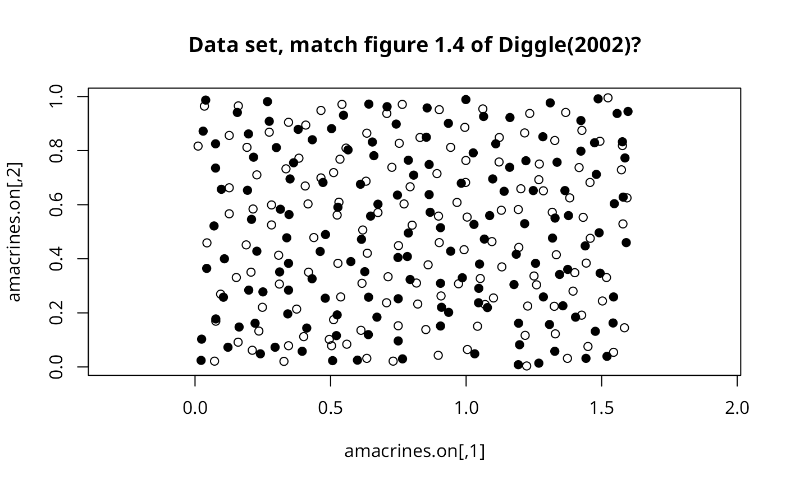
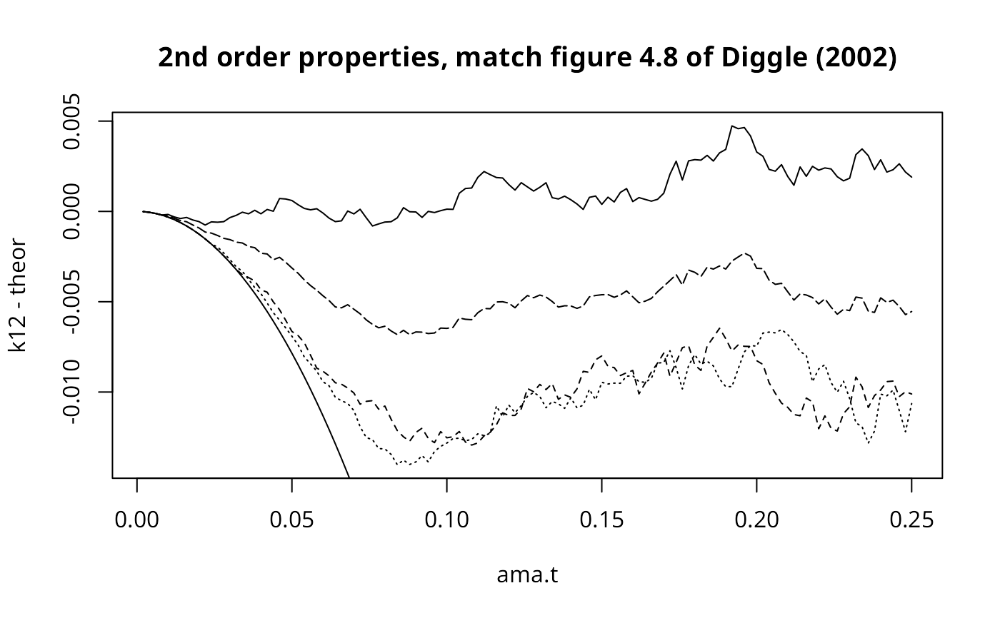
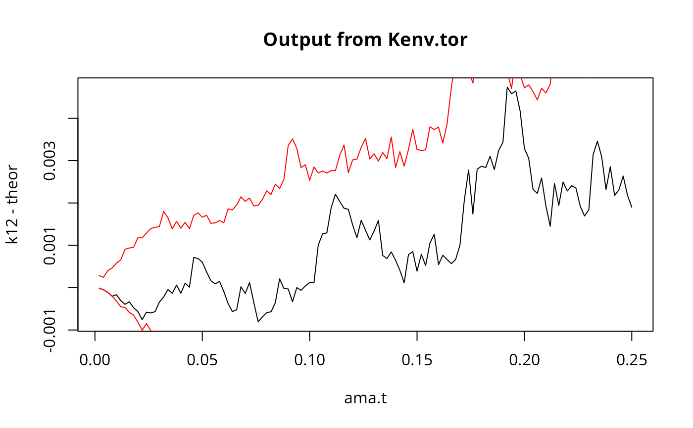
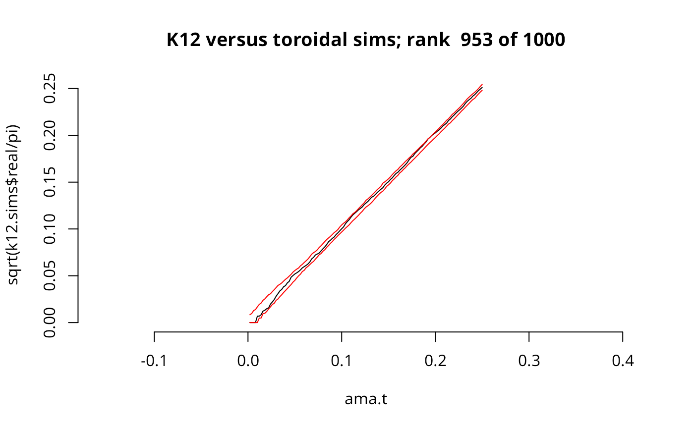

Kenv.tor1.RdModification of Kenv.tor() to allow the assignment of a p value to the
goodness of fit, following the method outlined in Peter Diggle's 1986
paper (J Neurosci methods 18:115-125) and in his 2002 book.
Kenv.tor1(pts1, pts2, poly, nsim, s, quiet = FALSE)First point data set
Second point data set
Polygon containing the points
Number of random toroidal shifts to do
Vector of distances at which to calculate the envelope
If FALSE, print a message after every simulation for progress monitoring. If TRUE, print no messages
A list with components: $upper, $lower, real, u, ksim, and rank. The first three
components are vectors like s, the next two contain results passed back from the simulations, and the final is a one-element vector with the rank of the observed data set.
data(amacrines)
ama.a <- rbind(amacrines.on, amacrines.off)
ama.bb <- bboxx(bbox(as.points(ama.a)))
ama.t <- seq(from = 0.002, to=.250, by=0.002)
nsim=999
plot(amacrines.on, asp=1, pch=19,
main="Data set, match figure 1.4 of Diggle(2002)?")
points(amacrines.off, pch=1)

#
k12 <- k12hat(amacrines.on, amacrines.off, ama.bb, ama.t)
#
k11 <- khat(amacrines.on, ama.bb, ama.t)
k22 <- khat(amacrines.off, ama.bb, ama.t)
k00 <- khat(ama.a, ama.bb, ama.t)
theor <- pi * (ama.t^2)
#
plot(ama.t, k12-theor, ylim=c(min( c(k12, k11, k22, k00) - theor),
max( c(k12, k11, k22, k00) - theor)),
main="2nd order properties, match figure 4.8 of Diggle (2002)", type="l")
lines(ama.t, -theor)
lines(ama.t, k11-theor, lty=2)
lines(ama.t, k22-theor, lty=3)
lines(ama.t, k00-theor, lty=5)

#
k12.tor <- Kenv.tor(amacrines.on, amacrines.off, ama.bb,
nsim, ama.t, quiet=TRUE)
plot(ama.t, k12-theor, type="l", main="Output from Kenv.tor")
lines(ama.t, k12.tor$upper-theor, type="l", col="red")
lines(ama.t, k12.tor$lower-theor, type="l", col="red")

#
k12.sims <- Kenv.tor1(amacrines.on, amacrines.off, ama.bb,
nsim, ama.t, quiet=TRUE)
plot(ama.t, sqrt(k12.sims$real/pi), type="l", asp=1, bty="n",
main=paste("K12 versus toroidal sims; rank ", k12.sims$rank, "of",
length(k12.sims$u)))
lines(ama.t, sqrt(k12.sims$upper/pi), col="red")
lines(ama.t, sqrt(k12.sims$lower/pi), col="red")
